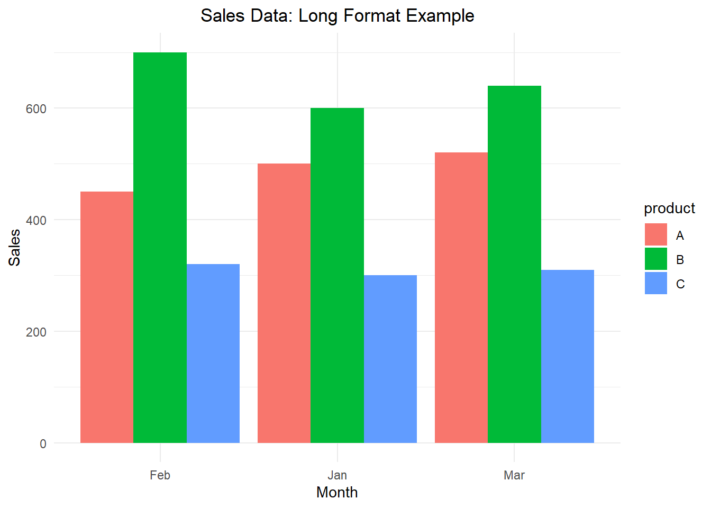

library(tidyr)
sales_data <- data.frame(
product = c("A", "B", "C"),
Jan = c(500, 600, 300),
Feb = c(450, 700, 320),
Mar = c(520, 640, 310)
)
sales_data product Jan Feb Mar
1 A 500 450 520
2 B 600 700 640
3 C 300 320 310
Data analysis requires a deep understanding of how to structure data effectively. Often, datasets are not in the format most suitable for analysis or visualization. That’s where data transformation comes in. Converting data between wide (horizontal) and long (vertical) formats is an essential skill for any data analyst or scientist, ensuring that data is correctly organized for tasks such as statistical modeling, machine learning, or visualization.
The concept of tidy data plays a crucial role in this process. Tidy data principles advocate for a structure where each variable forms a column and each observation forms a row. This consistent structure facilitates easier and more effective data manipulation, analysis, and visualization. By adhering to these principles, you can ensure that your data is well-organized and suited to various analytical tasks.
In this post, we’ll dive into data transformation using the tidyr package in R, specifically focusing on the pivot_longer() and pivot_wider() functions. We’ll explore their theoretical background, use cases, and the importance of reshaping data in data science. Additionally, we’ll discuss when and why we should use wide or long formats, and analyze their advantages and disadvantages.
In data science, structuring data appropriately can be the difference between smooth analysis and frustrating errors. Here’s why reshaping data matters:
Preparation for modeling: Many machine learning algorithms require data in long format, where each observation is represented by a single row.
Improved visualization: Libraries like ggplot2 in R are designed to work best with long data, allowing for more flexible and detailed plots.
Data management and reporting: Certain summary statistics or reports are more intuitive when the data is presented in a wide format, making tables easier to interpret.
Choosing the correct format can optimize both data handling and the clarity of your analysis.
pivot_longer(): Converts wide-format data (where variables are spread across columns) into a long format (where each variable is in a single column). This is particularly useful when you need to simplify your dataset for analysis or visualization.
pivot_wider(): Converts long-format data (where values are repeated across rows) into wide format, useful when data summarization or comparison across categories is required.
Function Arguments:
pivot_longer():
data: The dataset to be transformed.
cols: Specifies the columns to pivot from wide to long.
names_to: The name of the new column that will store the pivoted column names.
values_to: The name of the new column that will store the pivoted values.
values_drop_na: Drops rows where the pivoted value is NA if set to TRUE.
pivot_wider():
data: The dataset to be transformed.
names_from: Specifies which column’s values should become the column names in the wide format.
values_from: The column that contains the values to fill into the new wide-format columns.
values_fill: A value to fill missing entries when transforming to wide format.
| Wide Format | Long Format |
|---|---|
| Advantages: Easier to read for summary tables and simple reports. Can be more efficient for certain statistical summaries (e.g., total sales per month). | Advantages: Ideal for detailed analysis and visualization (e.g., time series plots). Allows flexible data manipulation and easier grouping/summarization. |
| Disadvantages: Can become unwieldy with many variables or time points. Not suitable for machine learning or statistical models that expect long data. | Disadvantages: Harder to interpret at a glance. May require more computational resources when handling large datasets. |
When to Use Wide Format: Wide format is best for reporting, as it condenses information into fewer rows and is often more visually intuitive in summary tables.
When to Use Long Format: Long format is essential for most analysis, particularly when working with time-series data, categorical data, or preparing data for machine learning algorithms.
pivot_longer()Let’s revisit the monthly sales data:
library(tidyr)
sales_data <- data.frame(
product = c("A", "B", "C"),
Jan = c(500, 600, 300),
Feb = c(450, 700, 320),
Mar = c(520, 640, 310)
)
sales_data product Jan Feb Mar
1 A 500 450 520
2 B 600 700 640
3 C 300 320 310Using pivot_longer(), we convert it to a long format:
sales_long <- pivot_longer(sales_data, cols = Jan:Mar,
names_to = "month", values_to = "sales")
sales_long# A tibble: 9 × 3
product month sales
<chr> <chr> <dbl>
1 A Jan 500
2 A Feb 450
3 A Mar 520
4 B Jan 600
5 B Feb 700
6 B Mar 640
7 C Jan 300
8 C Feb 320
9 C Mar 310This format is perfect for generating time-series visualizations, analyzing trends, or feeding the data into statistical models that expect a single observation per row.
pivot_wider()Now, let’s take the long-format data from Example 1 and use pivot_wider() to convert it back to wide format:
sales_wide <- pivot_wider(sales_long, names_from = month, values_from = sales)
sales_wide# A tibble: 3 × 4
product Jan Feb Mar
<chr> <dbl> <dbl> <dbl>
1 A 500 450 520
2 B 600 700 640
3 C 300 320 310This wide format is easier to read when creating summary reports or comparison tables across months.
Let’s extend the example to include regional sales data with missing values:
sales_data <- data.frame(
product = c("A", "A", "B", "B", "C", "C"),
region = c("North", "South", "North", "South", "North", "South"),
Jan = c(500, NA, 600, 580, 300, 350),
Feb = c(450, 490, NA, 700, 320, 400)
)
sales_data product region Jan Feb
1 A North 500 450
2 A South NA 490
3 B North 600 NA
4 B South 580 700
5 C North 300 320
6 C South 350 400Using pivot_longer(), we can transform this dataset while removing missing values:
sales_long <- pivot_longer(sales_data, cols = Jan:Feb,
names_to = "month", values_to = "sales",
values_drop_na = TRUE)
sales_long# A tibble: 10 × 4
product region month sales
<chr> <chr> <chr> <dbl>
1 A North Jan 500
2 A North Feb 450
3 A South Feb 490
4 B North Jan 600
5 B South Jan 580
6 B South Feb 700
7 C North Jan 300
8 C North Feb 320
9 C South Jan 350
10 C South Feb 400The missing values have been dropped, and the data is now in a form that can be analyzed by month, region, or product.
One of the most significant advantages of transforming data into a long format is the ease of visualizing it. Visualization libraries like ggplot2 in R often require data to be in long format for producing detailed and layered charts. For instance, the ability to map different variables to the aesthetics of a plot (such as color, size, or shape) is much simpler with long-format data.
Consider the example of monthly sales data. When the data is in wide format, plotting each product’s sales across months can be cumbersome and limited. However, converting the data into long format allows us to easily generate visualizations that compare sales trends across products and months.
Here’s an example bar plot illustrating the sales data in long format:
# Gerekli paketleri yükle
library(tidyr)
library(ggplot2)Warning: package 'ggplot2' was built under R version 4.3.3# Veri setini oluştur
sales_data <- data.frame(
product = c("A", "B", "C"),
Jan = c(500, 600, 300),
Feb = c(450, 700, 320),
Mar = c(520, 640, 310)
)
# Veriyi uzun formata dönüştür
sales_long <- pivot_longer(sales_data, cols = Jan:Mar,
names_to = "month", values_to = "sales")
# Çubuk grafiği oluştur
ggplot(sales_long, aes(x = month, y = sales, fill = product)) +
geom_bar(stat = "identity", position = "dodge") +
labs(title = "Sales Data: Long Format Example", x = "Month", y = "Sales") +
theme_minimal() +
theme(plot.title = element_text(hjust = 0.5))
sales_data: A wide-format dataset containing the sales of products across different months.
pivot_longer(): Used to transform data from a wide format to a long format.
ggplot(): Used to create a bar plot. The aes() function specifies the axes and coloring (for different products).
geom_bar(): Draws the bar plot.
labs(): Adds titles and axis labels.
theme_minimal(): Applies a minimal theme.
position = "dodge": Draws the bars for products side by side.
The generated plot would illustrate how pivot_longer() facilitates better visualizations by organizing data in a manner that allows for flexible plotting.
Why Visualization Matters:
Clear Insights: Long format allows better representation of complex relationships.
Flexible Aesthetics: With long format data, you can map multiple variables to visual properties (like color or size) more easily.
Layering Data: Especially in time-series or categorical data, layering information through visual channels becomes more efficient with long data.
Without reshaping data, creating advanced visualizations for effective storytelling becomes challenging, making data transformation crucial in exploratory data analysis (EDA) and reporting.
In data science, the ability to reshape data is critical for exploratory data analysis (EDA), feature engineering, and model preparation. Many statistical models and machine learning algorithms expect data in long format, with each observation represented as a row. Converting between formats, especially in the cleaning and pre-processing phase, helps to avoid common errors in analysis, improves the quality of insights, and makes data manipulation more intuitive.
pivot_longer() and pivot_wider()
While pivot_longer() and pivot_wider() are part of the tidyr package and are widely used, there are alternative methods for reshaping data in R.
Historically, functions like gather() and spread() from the tidyr package were used for similar tasks before pivot_longer() and pivot_wider() became available. gather() was used to convert data from a wide format to a long format, while spread() was used to convert data from long to wide format. These functions laid the groundwork for the more flexible and consistent pivot_longer() and pivot_wider().
In addition to pivot_longer() and pivot_wider(), there are alternative methods for reshaping data in R. The reshape2 package offers melt() and dcast() functions as older but still functional alternatives for reshaping data. Base R also provides the reshape() function, which is more flexible but less intuitive compared to pivot_longer() and pivot_wider().
Data transformation using pivot_longer() and pivot_wider() is fundamental in both everyday analysis and more advanced data science tasks. Choosing the correct data structure—whether wide or long—will optimize your workflow, whether you’re modeling, visualizing, or reporting.
The concept of tidy data, which emphasizes a consistent structure where each variable forms a column and each observation forms a row, is crucial in leveraging these functions effectively. By adhering to tidy data principles, you can ensure that your data is well-organized, making it easier to apply transformations and perform analyses. Through pivot_longer() and pivot_wider(), you gain flexibility in reshaping your data to meet the specific needs of your project, facilitating better data manipulation, visualization, and insight extraction.
Understanding when and why to use these transformations, alongside maintaining tidy data practices, will enhance your ability to work with complex datasets and produce meaningful results.